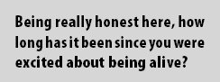
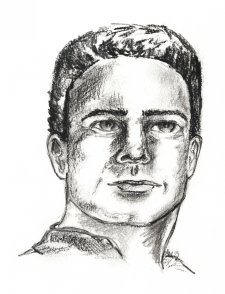

Gotta be More to Life
Life drags the chain a bit sometimes.
If you’ve been going to church for a while, you might have found yourself at a point where it’s just not very interesting any more. And the worst part of it is, many people keep assuming you’d be glad to do all sorts of “good Christian service.” And if you’re not, they say, you should be.
Something’s wrong here. You’d think just being alive should be really enjoyable. But it’s usually pretty rough. With life to battle with, it would be nice if being a Christian on top of that didn’t completely drain all your spirit.
Have a look at what Heman the Ezrahite says in Psalm 88. It’s a bit long, so I won’t quote it here. But it looks like even the men who wrote the Bible had times when they couldn’t see the light at the end of the tunnel. There’s no happy ending to this Psalm, either. Heman was really at the end of his tether.
We’d all like to be passionate about our lives. We’d love to be burning with the desire to do things for God, but we don’t really feel like it right now.
There are some major things that can get in our way. Physical or emotional pain can be a real destroyer. But even more common, and more deadly, is an enemy so uninteresting that we usually forget to think about it when it’s gone: plain old boredom.
Sometimes it’s your job. Flipping burgers, sweeping floors, sitting behind a computer—you know how it goes. And boredom really kicks in on those long afternoons at school. Or uni. Weekends—we all live for them—watch a movie, hang out with your friends, sleep in a bit longer. Wow.
On Sunday, you go to church, and if it’s not the sermon, then it’s the music, or the people. Being really honest here, how long has it been since you were excited about being alive? Excited about being a Christian?
Check out what David says in Psalm 22, especially the last half, starting around verse 22. I’ll quote a bit of the chapter for you:
I will declare your name to my countrymen!
In the middle of the assembly I will praise you!
You loyal followers of the Lord, praise him!
All you descendants of Jacob, worship him!
For he did not despise or shun the humble condition of the oppressed;
He did not ignore him;
When he cried out to him, he responded.
You are the reason I offer praise in the great assembly;
I will fulfil my promises before the Lord’s loyal followers.
Let the oppressed eat and be filled!
Let those who seek his help praise the Lord!
May you experience lasting encouragement!
That’s not quite life as we know it, is it? Imagine if you were as devoted to God as David was. Imagine if you actually cared enough about it all to say what he says.
John Eldredge, in a very cool book called The Journey of Desire, says about David,
Ask yourself, could this person be promoted to a position of leadership in my church? Heavens, no. He is far too unstable, too passionate, too desirous. It’s all about pleasure and desire and thirst. And David was called by God a man after his own heart.
Maybe we should rethink what it means to be a Christian.
Sometimes just growing up can be pretty boring. Not so long ago, we were young and cute enough that people would complement us on every minor accomplishment. That’s not the case any longer. More and more as you get older, you’ve got to go long distances on very little encouragement.
It would be very good, right now, to give some serious thought to whatever it is that’s giving you pain, or making life boring. Don’t take it lightly! It’s not just “another part of life.” It’s something that’s standing between you and your love of life. Standing between you and your God.
We all have ways of dealing with pain and boredom. Some of them are good, some of them are not. Others, while maybe good for a time, don’t really fix the problem.
It can be good to get away from a problem for a while, to give you a chance to recover, and see things with a different mind-set. You might go to another country for a year. You might read a book, or have a few drinks with your mates. Sometimes it helps to watch a movie, or play fun games with five-year-old kids who don’t yet know the meaning of heartache or world-weariness.
But the problem is still there when you get back. It doesn’t go away when you close your eyes. That can be hard to accept, but you know it’s true.
There are things you can do about it, however. The first one is your friends. Community is one of the most important things God gave humankind. When you’ve lost sight of what drives you, a lot of the time the biggest problem is that you need someone to talk to about stuff.
Don’t stop now
It’s around this point that most people give up. Just before the hard work begins. I’m sorry, but I really don’t have an easy way for you to get past this point. Sometimes I look at myself, and I think, “I’m still at this point myself. I’m still bumming around on the dull grey side of the fence.”
But go on we must.
When you practice some sports, especially something like distance running, you learn that you won’t pull through if you let pain slow you down. Our bodies—physically, emotionally, spiritually—can achieve an incredible amount more than we normally imagine. It’s hard to keep from thinking, when pain or tiredness comes on, “That’s it. I’m finished. I’ve gotta stop now.”
But actually, you’re not nearly as drained of energy as you think. It just feels like it. Heaps. Yet you probably know from experience that you could run another mile, if you had to. You could climb another mountain.
Very often, life’s like that. You’ve had a long week. A long year. It’s been miserable. You’ve stressed out and worked hard for something, and you got nowhere. You’ve used all your chances, you’ve had your second wind, and to be perfectly honest, you’ve got nothing more to give.
Nothing.
When you get to this point, trying to get rid of the pain is not going to happen. You’ve run the marathon, and you’re being asked to run another one. It’s now when you’ve got to say, “Ok. I’m in the pits. Even if people care about me, this is going to be one blinding red wall of pain. But I will take every step anyway, right to the end, even if it takes ten years.”
Marathon runners have it easy. But with the sort of pain that life sometimes puts on us, we’re not going to be able to pull through on our own. You may be able to ignore the pain. You may be able to force yourself to go on in spite of the pain. That’s awesome, because you’re not going to pull through if you can’t.
But you’d be a strong person if you could do it on your own, week in, week out. You’re going to need God. You’re going to need your friends. Never forget that.
I mentioned God. God is a friend—a very powerful friend. But He would be a pathetic friend if you couldn’t talk to him.
We know this—but sometimes we treat God like an ancient Sith Lord or something. When we talk to him, we switch to a bland, holy-sounding tone of voice, and we say all the right things, and step carefully around any sensitive points, and hide our personal problems from him.
David understood very well what it meant to talk to God. Here’s an example of how he prayed, in Psalm 55:
God, listen to my prayer!
Do not ignore my appeal for mercy!
Pay attention to me and answer me!
I am so upset and distressed,
I am beside myself, because of what the enemy says,
And because of how the wicked … angrily attack me.
Or the sons of Korah, in Psalm 42:
I say to God my rock,
“Why have you forgotten me?
Why must I walk around mourning because my enemies oppress me?”
Try praying like that sometime. It’s not wrong to ask God questions. It’s not wrong to tell God that your life is in the ditch. Don’t try and use language that sounds like it comes from the Bible; use your own words. You’ll feel like you’ve actually done some good, not just wasted half an hour talking to the sky. In fact, a huge amount will have been accomplished.
The fun begins
All this is only half the story. It’s nice to have mastered the pain and boredom in our lives, but if we don’t have something to live for, to devote ourselves to, the pain and boredom will come crashing right back.
We all know about having goals to work towards. But in general they just sort of hang there, frustrating us because we never get anywhere with them.
Sometimes that’s because we’re so busy. But if boredom is your problem, it’s more likely to be because you’re so lazy. No offence, but that’s the honest truth. Any motivational speaker will tell you that the first step towards a life of passion is to Get Up Right Now, Go And Accomplish Something Towards Your Goal.
Do it, and you’ll feel great about it. I don’t know what you aim for in life, but if you don’t have dreams, get some. Dream big or little dreams, and then go and live them.
Everyone’s dreams are different, but there’s one dream that Christians all over the world have. Or should have. It’s the ambition to work for God. It’s not a dream we each have, one of our own private goals. It’s a dream we have together.
If you’ve ever been to a rock concert, or maybe watched a movie like The Matrix Reloaded, or seen a peasant uprising, or been to a rugby game, you’ll know the feeling of being among hundreds of people, all wanting the same thing, all working for the same goal, all cheering for the same team. It can be an awesome feeling. The band plays their biggest hit, the peasants burn down the lord’s castle, the Crusaders score a try. And the atmosphere is so powerful you could swim in it.
That’s something you could really be passionate about. And it’s exactly what Christianity is. Only it’s not just a few hundred rugby fans. It’s a few hundred million people all over the world, for the last six thousand years, all serving the same God, all fighting for the same country.
You wouldn’t think it, looking at the mess Christianity is today, but isn’t that a goal you could make your biggest dream? Christians need leaders to unite us. Leading is a calling that we should give a lot more time to—it’s quite likely that you’ll be called to lead a part of God’s people at some point in your life. But it’s almost certain that you’ll be called on to help others become leaders.
Being a leader isn’t about being aggressive and strong-willed and assertive. Sometimes, yes, but not always. It’s not always about being a pastor or an elder, either. Some of the best leaders have been the ones you hardly noticed: leaders who inspired people by listening to them, rather than filling them with propaganda.
I read a book once, called Momo. It was about a little girl who lived just outside a village. All the villagers came to her when they had a problem, and told her all about it. She would listen very carefully, and the villagers came away full of good ideas and self-respect and love for others. She never said a whole lot to them. She was only a little girl and she wasn’t any brighter than anyone else her age. But she listened in such a way that made people know that they really mattered to the world. And the villagers were very united and they loved their work and their lives. They had someone strong to guide them.
Momo was similar in some ways to our leader, Jesus, who is the model for human leaders. You probably know people like this who would make great leaders. Encourage them. Push them a little bit—because the best leaders hardly ever put themselves forward without a nudge.
Sit back and relax
Being a Christian isn’t about sitting on your bum taking it easy. It never was. And that didn’t change when you were born, either.
Nevertheless, one of the most important parts of being a Christian is resting. All the stuff I’ve just been talking about is a lot of hard work. No matter how much enthusiasm you’ve got, if you keep it up 24/7, it’ll drain you completely.
We forget about resting too often, which is surprising, considering how lazy we humans can be. But we hardly ever take rest seriously. God gave us a day every week to rest on. And that’s a pattern we should follow during the week too—work a hard day’s work, spend the evening with your mates, or with your family, or just reading a book.
Work hard, play hard. Rest hard. Your soul needs refreshing.
One Sabbath, Jesus was going for a walk with his followers. They weren’t being quite holy enough for the Good Little Pharisees, who complained to Jesus about it. He said, “The Sabbath was made for man, not man for the Sabbath.”
God made the Sabbath for people to rest. Not because man is so weak that God thought, “Oh, those poor humans, they might not like to work all the time, I’ll give them a bit of time off.” No, resting is a part of how we are made. It’s built into our bones. We rest because we are made in the image of God—because after God created the world, He rested.
Get serious about it. Do something about your life and the lives of others around you. It’s time to revive your spirit.